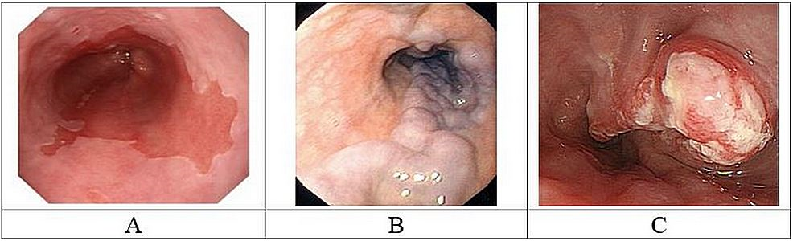
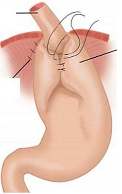
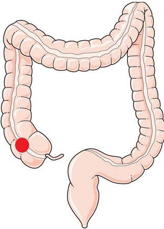
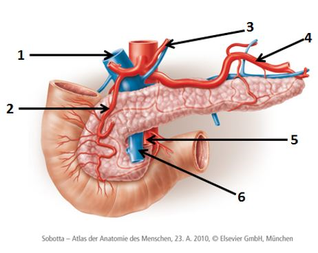

Vraag 1
Een 69-jarige man wordt gediagnosticeerd met een adenocarcinoom van de oesophagus, waarbij bij aanvullende diagnostiek levermetastasen zijn geconstateerd. Het tumor stadium is cT3N1M1. Hij ondergaat een behandeling met chemotherapie.
Hoe noemen we deze behandeling?
Vraag 2
Wat is de juiste behandeling van een 58-jarige man met een PA bewezen adenocarcinoom in het corpus van de maag cT3N0M0?
Vraag 3
Een 52-jarige vrouw presenteert zich met hematemesis. Bij endoscopie ziet u een afwijking in de slokdarm verdacht voor maligniteit.
Welk beeld past het meest bij deze patiënt?

Vraag 4
Een jaar na oesophagusresectie en buismaagreconstructie …
Vraag 5
Obesitas chirurgie is gebaseerd op restrictie en/of malabsorptie. Plaats de juiste term bij de juiste operatie.
duodenal switch
gastric bypass
gastric sleeve
maagband
Vraag 6
Wat is de meest voorkomende slokdarmaandoening?
Vraag 7
Motiliteitsstoornissen van de slokdarm komen vaak voor bij …
Vraag 8
Welke behandelingen zijn er voor reflux oesophagitis? Kies er drie.
Meerdere antwoorden mogelijk.
Vraag 9
Welke wandlaag komt niet voor in de oesophagus?
Vraag 10
Een man van 73 jaar oud, recent gediagnosticeerd met een oesophaguscarcinoom, komt op de polikliniek chirurgie voor een preoperatieve intake. Hij heeft behoorlijk overgewicht (gewicht is 95 kg, lengte 1.77m, BMI is 30 kg/m2), maar heeft flinke passageproblemen. Hij is recentelijk minstens 10 kg afgevallen zonder dat hij daar erg in had, u concludeert dat deze patiënt ondervoed is.
Het voedingsadvies aan deze patiënt zou zijn …
Vraag 11
Wat is sarcopene obesitas?
Vraag 12
Een 28-jarige man is bekend met de ziekte van Crohn. Recent is er opnieuw een opvlamming geconstateerd. Naast krampende buikpijn en diarree is er ook sprake van gewichtsvermindering en conditieverlies. Beter navragen leert dat hij in 6 maanden tijd 10 kg gewicht is verloren (hij weegt nu 60 kg). Hij zegt zelf ook dat zijn ‘spieren als sneeuw voor de zon verdwijnen’. Natuurlijk moet er nu een voedingsinterventie plaatsvinden.
Waar moet nu ook aandacht voor zijn, naast aandacht voor resorptiestoornissen?
Vraag 13
Een 68-jarige man heeft klachten van pijn in de bovenbuik, gewichtsverlies, misselijkheid en braken. Aanvullend onderzoek (gastroduodenoscopie met biopten) toont aan dat het om een intestinaal type adenocarcinoom gaat van de maag.
Welke bewering is juist?
Vraag 14
Welke operatie ziet u hier afgebeeld?

Vraag 15
Kies het juiste medicijn bij de aandoening.
Sleep een optie naar de bijbehorende rij, of tik eerst op een kaart en dan op een rij.
anemie bij coloncarcinoom
Sleep hier naartoe
slokdarmvarices
Sleep hier naartoe
ulcuslijden
Sleep hier naartoe
Vraag 16
Een 31-jarige vrouw presenteert zich op de SEH met pijn in de linker bovenbuik. U verdenkt haar van een pancreatitis.
Welke aanvullende diagnostiek vraagt u aan?
Vraag 17
Bij een 30-jarige man staat boven aan uw differentiaal diagnose symptomatisch galsteenlijden.
Wat is de eerste keuze qua beeldvorming?
Vraag 18
Wat zijn kenmerken van cholestase? Vink er drie aan.
Meerdere antwoorden mogelijk.
Vraag 19
Welke stellingen zijn juist?
Portale hypertensie kan gepaard met ascites, pleuravocht en oesophagusvarices.
Portale hypertensie kan gepaard met ascites, splenomegalie en been varices.
Portale hypertensie wil zeggen dat de druk in de levervenen te hoog is.
Portale hypertensie wil zeggen dat de druk in de vena portae te hoog is.
Vraag 20
Welke stelling is juist?
Vraag 21
Een vrouw van 29 jaar is door de huisarts verwezen naar de Spoedeisende Hulp. Zij blijkt 18 weken zwanger. Sinds gisteravond heeft zij pijn in de rechter buikhelft. De pijn is progressief van aard, ze is hierbij misselijk en moet overgeven. De SEH-arts ziet een zieke vrouw met koorts, lage bloeddruk en een snelle pols (temperatuur van 38,5 °C, tensie is 110/79 mmHg met een pols van 100/min). Bij lichamelijk onderzoek is er een diffuus drukpijnlijk abdomen.
Welke diagnose is het meest waarschijnlijk?
Vraag 22
Wat kunnen tekenen van levercirrose zijn bij lichamelijk onderzoek? Vier antwoorden zijn juist.
Meerdere antwoorden mogelijk.
Vraag 23
Welk laboratoriumonderzoek zegt iets over de synthesefunctie van de lever?
Vraag 24
Een 42-jarige magere, Turkse man meldt zich op uw spreekuur vanwege refluxklachten. Hij heeft verder een blanco voorgeschiedenis en ontkent medicatie en alcoholgebruik. Het lichamelijk onderzoek is normaal. U verricht laboratoriumonderzoek en vindt verhoogde transaminasen. Wat is de meest waarschijnlijke differentiaal diagnose?
Vraag 25
Het optreden van inflammatoire darmaandoeningen (IBD) is geassocieerd met leveraandoeningen.
Welke aandoening is sterk geassocieerd met IBD?
Vraag 26
Welke twee beweringen t.a.v. cholelithiasis zijn juist?
Meerdere antwoorden mogelijk.
Vraag 27
Welke vijf elementen bepalen de Child-Pugh classificatie?
Meerdere antwoorden mogelijk.
Vraag 28
Wat is de meest voorkomende indicatie voor levertransplantatie in Nederland?
Vraag 29
Een 43-jarige vrouw meldt zich op de SEH in verband met bewegingsdrang, koorts T 39,5 en een koude rilling. Het laboratoriumonderzoek toont: Leukocyten aantal 18.3 × 10⁹/L (normaal 4–10), C-reactive protein (CRP) 110 mg/L (normaal <2.5), Bilirubine 64 µmol/L (normaal <20 µmol/L), Alkalische fosfatase 512 U/L (normaal <115 U/L), Gamma GT 548 U/L (normaal <55 U/L), ASAT 31 U/L (normaal <35 U/L), ALAT 43 U/L (normaal <45 U/L), Amylase 46 U/L (normaal <107 U/L), Protrombinetijd 1.02 (normaal 0.80-1.20).
Wat is de meest waarschijnlijke diagnose?
Vraag 30
Hoe onderscheidt u een milde van een ernstige pancreatitis? Kies bij de klinische symptomen milde pancreatitis of ernstige pancreatitis.
misselijkheid
opgezette buik
buikpijn/rugpijn
pleuravocht
hemodynamische instabiliteit
nierinsufficiëntie
Vraag 31

Welke bewering(en) is (zijn) juist?
De patiënt dient een hemicolectomie rechts te ondergaan.
De patiënt dient een ileocoecaal resectie te ondergaan.
De patiënt dient een low anterior resectie te ondergaan.
Rechtzijdige coloncarcinomen presenteren zich vaker met een anemie.
Vraag 32
Er wordt een echo gemaakt van een patiënt met appendicitis acuta.
Welke beweringen zijn juist? Kies er drie.
Meerdere antwoorden mogelijk.
Vraag 33
Kies de juiste alternatieven.
Bij chronisch gebrek aan vitamine A werkt het immuun systeem van de niet optimaal.
Vraag 34
Retinol zuur is betrokken bij de switch van immunoglobuline naar het isotype …
Vraag 35
Is onderstaande bewering juist of onjuist? Korte vetzuurketens kunnen in de darm door commensale bacteriën gevormd worden. De vetzuurketens hebben een ontstekingsbevorderend effect op het afweersysteem.
Vraag 36
Een huisarts ziet op het spreekuur een vrouw van 63 jaar. Zij heeft sinds twee dagen buikpijn die in heftigheid is toegenomen. De ergste pijn zit in de rechteronderbuik, komt in aanvallen en is dan zeer hevig. Sinds vandaag moet ze vrijwel ieder uur braken. Gisteren heeft ze een keer wat dunne ontlasting gehad. Bij onderzoek is de temperatuur 37.9 graden. De pols is 88/minuut, de bloeddruk is 135/75 mmHg. Bij onderzoek van de buik hoort de huisarts gootsteengeruisen. Bij palpatie is de buik soepel, maar rechtsonder wel erg pijnlijk. Haar voorgeschiedenis vermeldt een verwijderd ovarium rechts.
Wat is de meest waarschijnlijke diagnose op basis van deze bevindingen?
Vraag 37
Een huisarts ziet op het spreekuur een man van 63 jaar. Hij heeft sinds twee dagen buikpijn die in heftigheid is toegenomen. De pijn is momenteel heel hevig. Bewegen doet veel pijn. Hij heeft daarbij sinds een dag 40.1 graden koorts. Hij heeft vandaag 2x gebraakt en 1x dunne ontlasting gehad zonder bloed of slijmbijmenging. De pijn zit rechtsboven in de buik. Bij onderzoek is de pols 90 regulair aequaal per minuut. De bloeddruk is 175/98 mmHg. Bij onderzoek van de buik hoort de huisarts weinig peristaltiek. Percutoir zijn er geen afwijkingen. Bij palpatie van de rechterbovenbuik is er défènse musculair.
Wat is op dit moment de belangrijkste reden om de patiënt naar de spoedeisende hulp te sturen?
Vraag 38
Een patiënt van 55 jaar presenteert zich op de SEH met acute buikpijn. De uiteindelijke diagnose is een diverticulitis stadium IB volgens de (gemodificeerde) Hinchey classificatie.
Welk beleid dient nu gevolgd te worden?
Vraag 39
Welke beweringen zijn juist? Kies er drie.
Meerdere antwoorden mogelijk.
Vraag 40
Een 23-jarige man heeft een echografisch bewezen appendicitis acuta.
Wat is de juiste behandeling?
Vraag 41
Welke waarschijnlijkheidsdiagnose hoort bij welke patiënt?
Sleep een optie naar de bijbehorende rij, of tik eerst op een kaart en dan op een rij.
patiënt X
Sleep hier naartoe
patiënt Y
Sleep hier naartoe
Vraag 42
Uit welke elementen bestaat de eerste behandeling van een patiënt met een ileus?
Vraag 43
Wat is de voornaamste oorzaak voor het ontstaan van een anuscarcinoom?
Vraag 44
Een 53-jarige vrouw heeft 2 jaar geleden een hemicolectomie rechts ondergaan in verband met een adenocarcinoom van het coecum pT3N1. Momenteel heeft zij op CT abdomen aanwijzingen voor een lokaal recidief en peritoneale metastasen.
Welke behandeling stelt u voor?
Vraag 45
Welk kenmerk hoort bij welk ziektebeeld?
afteuze lesies
gehele tractus digestivus
met name colon
mucosale onsteking
peri anale fistels
Primair Scleroserende Cholangitis
tramrail ulcera
verhoogde kans op coloncarcinoom
Vraag 46

Met welk nummer worden de volgende bloedvaten aangeduid?
Sleep een optie naar de bijbehorende rij, of tik eerst op een kaart en dan op een rij.
a. mesenterica superior
Sleep hier naartoe
a. pancreaticoduodenalis
Sleep hier naartoe
vena portae
Sleep hier naartoe
Vraag 47
Van welke embryonale structuur zijn de volgende structuren een restant?
Sleep een optie naar de bijbehorende rij, of tik eerst op een kaart en dan op een rij.
Ligamentum falciforme
Sleep hier naartoe
Ligamentum teres hepatis
Sleep hier naartoe
Ligamentum venosum
Sleep hier naartoe
Vraag 48
Wat is de juiste volgorde van de galwegen (van lever richting duodenum)?
Vraag 49
Tijdens een consult is de patiënt wat kortaf in zijn antwoorden naar de arts. Om de patiënt wat meer uit eigen referentiekader te laten vertellen zegt de huisarts tegen de patiënt: "Jaja, juist. En toen?"
Bovenstaande vorm van actief luisteren wordt geduid als:
Vraag 50
Als er tijdens een consult sprake is van een zeer lage ‘emotionele spanning’ bij een patiënt, wat mag je volgens de prestatie-emotiecurve verwachten van haar ‘prestatieniveau’?
Vraag 51
Een coassistent, die sinds 5 dagen op de afdeling kindergeneeskunde werkt, bemerkt vanochtend onder de douche bij zichzelf blaasjes. Tijdens zijn huisartsenstage in de weken hiervoor is hij in contact geweest met een meisje met een varicella zosterinfectie, dus hij gaat er van uit dat hij nu ook waterpokken heeft. Hij meldt zich direct bij de bedrijfsarts, die hem regelrecht naar huis stuurt.
Welke maatregelen dienen nu genomen te worden op de afdeling kindergeneeskunde?
Vraag 52
Een 78-jarige man maakt een cruise en wordt tijdens het bezoek in Amsterdam zo ziek dat hij moet worden opgenomen in het VUmc. Op de SEH zie je een brakende, gedehydreerde man, met diarree. De diagnose gastro-enteritis wordt gesteld.
Kies de juiste alternatieven.
De meest waarschijnlijke verwekker is en de patiënt moet in . Zelf doe je masker op.
Vraag 53
Barrières ingebouwd in de werkomgeving om suboptimale gebeurtenissen te voorkomen, komen voort uit de …
Vraag 54
Wat is een concreet voorbeeld van een actieve fout?